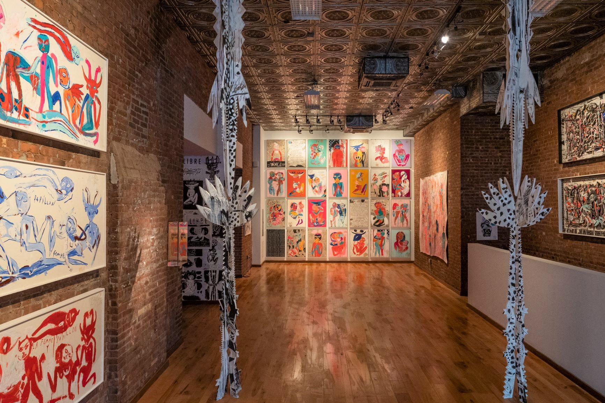
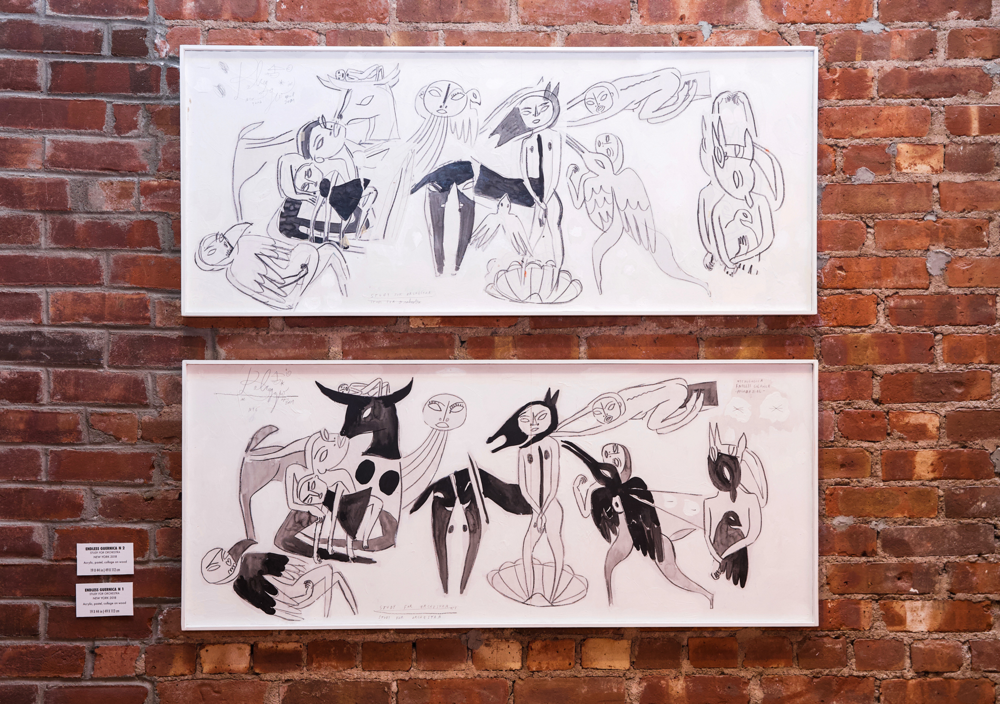

-----------------------------------------------------------------
Carlito Dalceggio Interview by Adam Aslan

Works From Canal St Installation - Photo Credit - Olivier Bousquet
Carlito Dalceggio is a multimedia artist based in New York City who has made art in Nomadic fashion in places such as Mexico City, Paris, Istanbul, and Rio de Janeiro. He is in residence at Mana Contemporary. In this interview, he touches upon his philosophy and the importance of words in his art. The dialogue continues to delve into the importance of color and concept in his work. With influences from around the world, he shares wisdom that has been gained globally. He just completed an exhibition at 332 Canal St called Mythologia Libre.
1. What is your Philosophy?
I am a freedom warrior- from inner revolution to universal liberation,,,, inspiration and imagination are the two key to reach infinity- there are seven keys to create art 1- intuition 2-imagination -3-inspiration- 3- passion- 4-love 5-freedom 6- devotion 7-vision
I’m driven by a deep desire to transform the world and to transform myself, by pushing further the limits of reality, and to erase all boundaries, my art exists right in between chaos and balance, where freedom can expands .
I see art as the antidote- art as the fire that will bring everyone together.
2. What do words do in your art?
Words and calligraphy are a deep source of inspiration for me, I live surrounded by books of visions and poems, and my first brushstrokes have been guided by the mystical calligraphies and ancient symbols. I long to dissolve the boundaries between all medias: painting to sculpture to video to writing, The alchemical fusion of words and image give birth to a new language. I write in the same way as I paint: using the cut-ups technique to defy the reason, and obtain the unknown, automatic and intuitive, a collage.
Works From Canal St Installation - Photo Credit - Olivier Bousquet
3. Is Color or Concept more important you you? Why? Which in particular?
Both are vital to my art: Colors are my words, my world, my real language and the way to transmit the myths : color are my essence: my mind navigates with images and colors that are translated to language after. I live in a sea of colors.
Concept, and vision, come from a deep source, primordial, These myths fight to be channeled to the world of humans: to be painted and transmitted. These concepts are energy, raw and undefined, and come to me in dreams and visions spontaneous, free, free from gravity and free from history.
4. Who influences you when it comes to your artistic style? And who influences your concepts?
My artistic style was primarily shaped by 4 master pieces- Guernica from Picasso, Howl by Allen Ginsberg, The colors of pomegranate by Sergei Parajanov and by The Bolero of Maurice Ravel, and was also shaped by deep journeys into the heart of may cultures around the world: calligraphy masters in Istanbul to the Huichols in Mexico. My artistic style was shaped by the books of Aldous Huxley, Anais Ain, poetry of the beats, by the modern century: from Leger to Dubuffet, to Cobra movement and in more recent times: Cy Twombly and Basquiat,,,
I would call my concepts, visions: new myths rising, and they are inspired and influenced by the present moment: in which culture I am creating, by who I’m surrounded by , by the books I read, by the music I listen, My studio is a magic place for creation, a multi-media existence laboratory in the tradition of the alchemists: I am surrounded by a magically orchestrated universe and when I dive in the ritual of creation, I am one with the spirits, driven by intuition, passion, rage and love to channel these paintings and pieces of art, I almost lose my human shape when I paint, I dive into the unknown, and transmit, bring back my experience, and transmit them to the world. I travel back to the depth of time to reach the origin, and dissolve all boundaries. 
5. Who has provided the most useful wisdom in your life?
Wisdom is when we reach the centre of ourselves, when all our opposites sides are expressed, when everything that we are is manifested at the same moment: poets, seekers of truth, pearl divers, the wind, the flight of the pelicans, the eyes of a stranger at the edge of the worlds, a child so pure, the ocean , and very unique souls I encountered in the far edge of reality. Collaboration with artists since centuries, to assure the survival of myths, And surely one of the most useful wisdom in my life came from Louis Pauwells and Jacques Bergier with their book- The morning of the magicians, a deep study to the great mystery of existence and the endless possibilities of the human soul.
----------------------------------------------------------------- Home